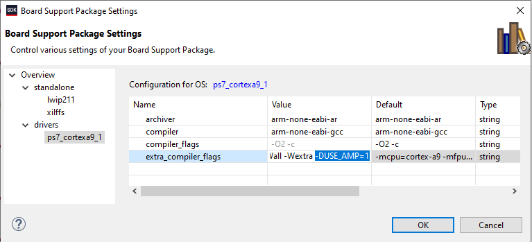
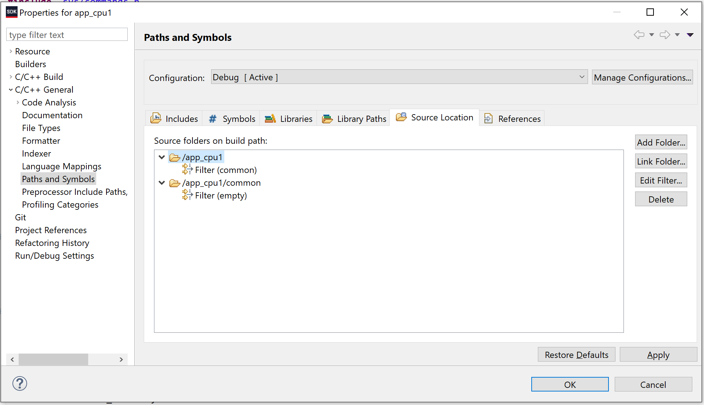
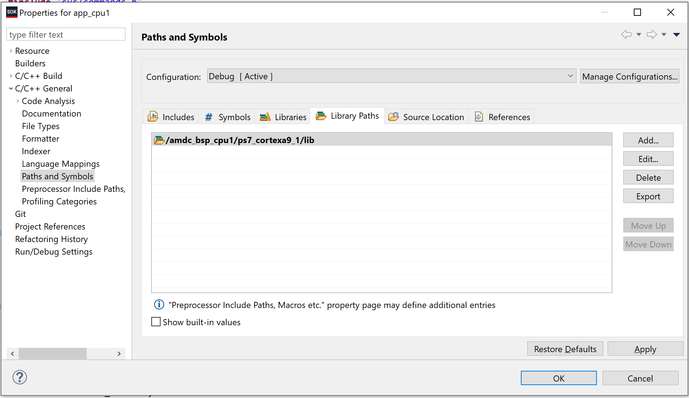
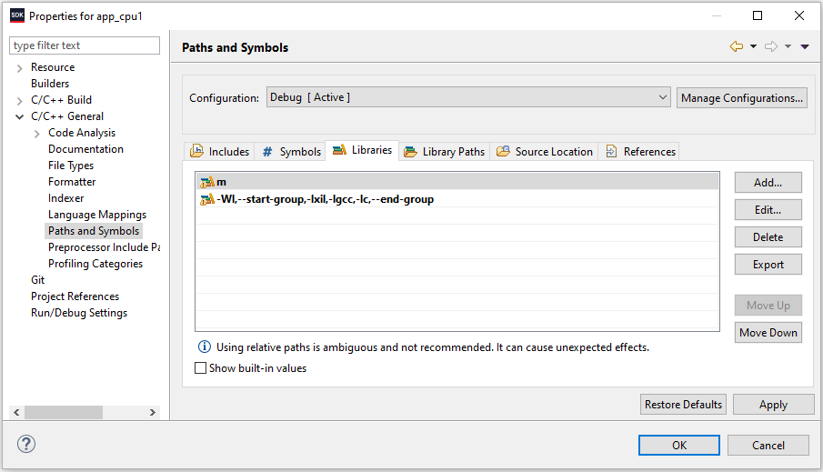
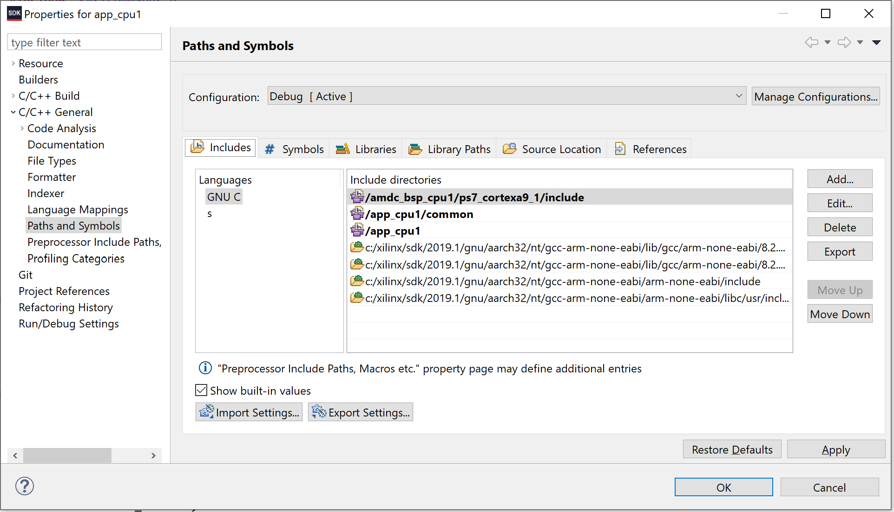
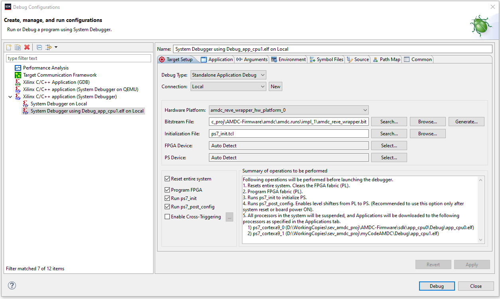
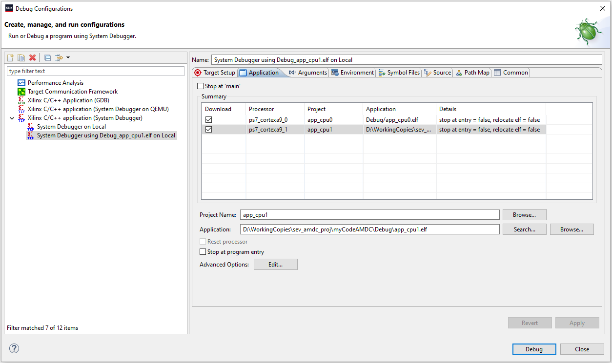

Building and Running Firmware¶
Following these instructions will get the AMDC firmware environment up and running on your local machine for development and testing purposes.
Required Software¶
Firmware development environment needs a few things:
Xilinx Vivado 2019.1 and SDK (if you don’t have these, follow these steps to install them)
em.avnet.com:picozed_7030_fmc2:part0:1.1board definitionGo here
Download the zip file and unzip it
Move the resulting folder (
picozed_*) toC:\Xilinx\Vivado\2019.1\data\boards\board_files\...
Cloning from GitHub¶
There are two recomended options for cloning the AMDC-Firmware repo from GitHub and creating a local working space on your computer. To choose between them, you must first decide if your user application(s) will be private or open-source. Most likely, your code will be private. This means that you will not contribute it back to the AMDC-Firmware repo as an example application.
Open-Source Example Applications¶
If you are not creating private user applications, i.e. your code will be contributed back to the AMDC-Firmware repo as an example application:
Download the
AMDC-Firmwaregit repo to your local machine like normal:git clone https://github.com/Severson-Group/AMDC-Firmware
Ensure it is in a permanent location (i.e., not
Downloads)Ensure the path doesn’t contain any spaces.
NOTE: $REPO_DIR represents the file system path of the AMDC-Firmware repository.
Private User Applications¶
For the majority of use cases, your user application(s) will be private and reside in a different repo than the AMDC-Firmware repo (i.e. your own personal repo):
Create your master repo (which will eventually contain your private code as well as a copy of
AMDC-Firmware)Ensure it is in a permanent location (i.e., not
Downloads)Ensure the path doesn’t contain any spaces.
In this repo:
Add a git submodule for the
AMDC-Firmwarerepo:git submodule add https://github.com/Severson-Group/AMDC-FirmwareOptional (and suggested): add
branch = developto.gitmodulesso your submodule will track the develop branch by defaultCopy
AMDC-Firmware/sdk/app_cpu1/userto your repo’s root directory, and rename (perhaps as “my-AMDC-private-C-code”)
You should now have a master repo with two subfolders:
my-AMDC-workspace/ <= master repo
AMDC-Firmware/ <= AMDC-Firmware as library
...
my-AMDC-private-C-code/ <= Your private user C code
...
NOTE: In the rest of this document, $REPO_DIR represents the file system path of the AMDC-Firmware repository, not your master repo.
Attention
If you plan to work on your private user repositories on multiple computers, it is recommended that you clone it to the same directory on each computer. Take this into consideration when first establishing your private repo (i.e., don’t clone it to the D drive if not all computers have a second hard drive).
This is due to certain Xilinx SDK settings using absolute (instead of relative) file system paths.
Common git submodule commands¶
Your repo now contains AMDC-Firmware as a git submodule. Read about submodules here or here. The most common command you will use is the update command, which updates your submodule from the remote source. Execute this command from your master repo: git submodule update. If you have not initialized your submodules, append --init to the previous command.
Vivado¶
Vivado is used to configure the Zynq-7000 SoC (clocks, pins, etc). All FPGA development happens within Vivado. All users must set up a Vivado project and build a FPGA bitstream.
If you are not doing anything specialized that would require changes to the FPGA, after following these steps, you do not need to use Vivado again. All your future development will happen within the SDK.
Creating Vivado Project¶
Only source files and IP is version controlled which mean you must generate a local Vivado project. To do this:
Open Vivado Application
Tools>Run Tcl Script...Select
$REPO_DIR\import_rev*.tclscript (use appropriate script for the target AMDC hardware)OK
Upon successful project generation, the block diagram will open. If the block diagram does not open, fix the errors and try reimporting project. See the errors by opening the Tcl Console pane in Vivado.
Attention
Make sure the block diagram automatically opens after running the import script! No automatic block diagram opening means it will not work!
If the block diagram does not open automatically, check the Messages or Tcl Console panels for more information.
Common Errors¶
Having spaces in the file system path for the Vivado project is not supported. For example, if your repo is located in your user directory and your username has a space in it:
C:\Users\**John Doe**\Documents\GitHub\AMDC-Firmare. If this is the case, the project import will fail. Move the repo elsewhere and try again.The import script will not overwrite the
amdc/Vivado project folder on disk. If you are trying to regenerate the Vivado project, you must delete the oldamdc/folder before running the script.Vivado will fail during import of the project if the IP cores are “locked”. This can happen if you checkout a new branch of code and try to rebuild Vivado without deleting all the temporary files. The easiest way to fix this is to always delete and reclone the
AMDC-Firmwarefolder when changing code versions.
Generating Bitstream¶
After generating the project itself, you need to generate a bitstream to load into the FPGA.
In Vivado…
PROGRAM AND DEBUG>Generate BitstreamClick through the pop-ups until it starts actually working
If there are
Launch Run Critical MessagesaboutPCW..., ignore them and click OK
This step will take a while (~10 minutes). Upon successful generation, the bitstream is ready to load onto AMDC. This happens in the SDK section of this document.
Export Hardware¶
You now need to export the hardware from Vivado to the SDK environment.
File>Export>Export Hardware...Make sure to uncheck
Include bitstreamSet location to export to:
$REPO_DIR\sdkOK
Open SDK from Vivado¶
This is an important step. The first time you generate the FPGA hardware configuration files, etc, you must launch the Xilinx SDK directly from Vivado. This sets up a hardware wrapper project which is needed for the firmware, and some environment variables.
File>Launch SDKSelect
$REPO_DIR\sdkfor both “Exported location” and “Workspace”OKSDK will open
Ensure the project
amdc_rev*_wrapper_hw_platform_0is inProject Explorer
You may now close Vivado if you do not plan on changing the FPGA HDL. Also, you may now close the SDK. You will need to open it in the next section, but practice opening it directly – not from Vivado.
Xilinx SDK¶
Xilinx SDK (referred to as just SDK) is used to program the DSPs on the Zynq-7000 (i.e., C firmware). You will use the SDK to write your code and compile it. Then, you will use it to program the AMDC with your new code and debug issues. Finally, you can use the SDK to flash the AMDC after code development is complete with a permanent image (i.e., will automatically boot when powered on).
Open SDK¶
Open Xilinx SDK 2019.1
Set workspace to:
$REPO_DIR\sdkOnce open, close the Welcome tab
Create BSP Project¶
Attention
To run dual-core programs, you need to make a seperate BSP project targeting each core individually.
Follow the below steps twice, but change the Target Processor for each one to CPU0/CPU1.
Name each BSP project: amdc_bsp_cpu0 and amdc_bsp_cpu1.
After creating both BSPs, you must update the settings for amdc_bsp_cpu1 to add an extra compiler flag: -DUSE_AMP=1.

See the Dual Core docs for more information.
File>New>Board Support PackageSet
Project nameto “amdc_bsp”FinishPop-up will appear
Select
lwip***Select
xilffsOKThe BSP will build
Import Projects into SDK¶
The SDK workspace will initially be empty (except for amdc_rev*_wrapper... from above and new amdc_bsp). You need to import the projects you want to use.
Open-source example applications:¶
Follow these steps to import projects directly from the core AMDC-Firmware repo (i.e. open-source example applications):
File>Open Projects from File System...Directory...Select:
$REPO_DIR\sdkEnsure all projects are selected
Finish
Private user applications:¶
Follow these steps to import projects from your private user repo:
File>Open Projects from File System...Directory...Select:
your master user repo/my-AMDC-private-C-codeFinishRepeat steps 1 - 4, but this time in step 3 select
$REPO_DIR\sdk\app_cpu0
After clicking Finish, the SDK will attempt to build the new private user applications. The compilation will fail. If it doesn’t, you did not import your private user application project correctly – delete the project from the SDK and try again until it fails to build.
Once it fails to build your new imported project, follow the steps below to fix the compilation. This will restructure the compiler / linker so they know where to find the appropriate files.
Fix common code compilation¶
This section explains how to configure the SDK build system to correctly use the AMDC common code from the submodule.
Only complete these steps if the build failed after you imported the user project!!! If there were no errors, skip this section. There should be no errors if you have imported the app_cpu1 project as an open-source project (i.e. not a private user application).
Link common folder to project:
In the
Project Explorer, deletecommonfolder fromapp_cpu1project (if present)Open
app_cpu1project propertiesC/C++ General>Paths and Symbols>Source Location>Link Folder...Check the
Link to folder in the file systemboxBrowse to
$REPO_DIR\sdk\app_cpu1\commonOK
Fix compiler includes to reference common:
Change to
IncludestabEdit...on/app_cpu1/commonClick
Workspace...and selectapp_cpu1/commonOKOK
Fix strange SDK issue:
Edit...on/app_cpu1/app_cpu1Change directory to
/app_cpu1OK
Fix another strange SDK issue:
Edit...on/app_cpu1/amdc_bsp_cpu1/ps7_cortexa9_1/includeChange directory to
/amdc_bsp_cpu1/ps7_cortexa9_1/includeOK
Add library path for BSP:
Change to
Library PathstabAdd...>Workspace...>amdc_bsp_cpu1/ps7_cortex9_1/libOK
Update linker library options:
Change to
C/C++ Build>SettingsTool SettingstabARM v7 gcc linker>Inferred Options>Software PlatformAdd the following for
Inferred Flags:-Wl,--start-group,-lxil,-lgcc,-lc,--end-groupARM v7 gcc linker>LibrariesAdd
munderLibrariesClick
OKto exit properties dialog
Expected Paths and Symbols Settings¶
After following the above steps, the project build settings should resemble the following screenshots:
   
Build SDK Projects¶
SDK will attempt to build the projects you just imported. Wait until all projects are done compiling… Could take a few minutes…
There shouldn’t be any errors. Ensure there are no errors for amdc_bsp and your desired application project (i.e. app_cpu1)
All done! Ready to program AMDC!
Ensure git Synchronized¶
At this point, you are done generating code / importing / exporting / etc. Now we will ensure git sees the correct changes.
Discard changes to AMDC-Firmware¶
Your submodule AMDC-Firmware should be clean, i.e. no changes. Chances are, this is not true. Please revert your local changes to AMDC-Firmware to make it match the remote version.
Vivado probably updated the *.bd file… Simply run: git restore ... to put this file back to a clean state.
Add .gitignore as needed (private user code only)¶
Run git status in your private user repo. If git sees changes to the following folders, create a gitignore file so that they are ignored.
.metadata/Debug/Release/
Making Private Repository Portable¶
Please read this document for instructions on how to further configure your private repository to support expedited cloning.
Programming AMDC¶
Ensure the AMDC JTAG / UART is plugged into your PC and AMDC main power is supplied.
Setup SDK Project Debug Configuration¶
Right-click on the project you are trying to debug, e.g.
app_cpu0Debug As>Debug Configurations...Ensure you have a
System Debugger using Debug_foo.elf on Locallaunch configuration ready for editing. If not:Right-click on
Xilinx C/C++ application (System Debugger)from left pane >NewA new panel should appear on the right half of popup
Ensure the
Target Setuptab is openSelect
Browse...forBitstream FileFind the bitstream which Vivado generated (should be at
$REPO_DIR\amdc\amdc.runs\impl_1\amdc_rev*_wrapper.bit) and clickOpen
Check the following boxes:
Reset entire system,Program FPGA,Run ps7_init,Run ps7_post_configClick
ApplyClick
Close
Attention
If you are targeting dual-core operation, you must manually specify the *.elf file for both cores.
In the second tab, browse for the ELF files which are located under the Debug/ sub-folder.
Uncheck the “stop on main” checkbox to ensure both cores start running right away during debug.
After following the above steps for dual-core operation, the debug configuration should resemble the following screenshots:  
Running Project on AMDC¶
Now, you are ready to start the code on AMDC!
Right-click on application, e.g.
app_cpu0Debug As>Launch on Hardware (System Debugger)SDK Logpanel in the GUI will show stream of message as AMDC is programmedSystem reset will occur
FPGA will be programmed
Processor will start running your code (must click play button to start it running)
NOTE: You only have to do the right-click and debug from the menu the first time – next time, just click the debug icon from the icon ribbon in the GUI (located to left of play button).
Connecting to AMDC over USB-UART¶
To interface with the serial terminal on AMDC, your PC needs the appropriate driver:
For
REV Dhardware, the UART interface is theSilicon Labs CP210x USB-UART BridgeFor
REV Ehardware, the UART interface is fromFTDIand should be natively supported by your operating system
For Silicon Labs UART-USB Driver (REV D hardware)¶
Open: https://www.silabs.com/products/development-tools/software/usb-to-uart-bridge-vcp-drivers
Download the right drivers for your platform and install them.
Verify the drivers are installed:
Connect a micro USB cable to the “UART” input on AMDC
Check that a
Silicon Labs CP210x USB-UART Bridgeappears as a connected device.
Issues¶
Getting AMDC to start and run FPGA and C code can be hard. If it isn’t working, try repeating the programming steps. Make sure to reset the board by either power cycling AMDC or pushing RESET button on AMDC.
If you are getting compilation errors in the SDK (especially during the linking phase), consider deleting the amdc_bsp project(s) and regenerating – doing so sometimes resolves common issues.
NOTE: Pushing the RESET button on PCB is NOT exactly the same as doing a full power cycle of board. The RESET button performs a different type of reset (it keeps around debug configurations, etc). During development, you may need to perform a full power cycle, while other times, a simple RESET button push will work.
Xilinx tools also have many quirks. Good luck getting everything working!